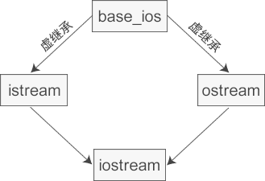

C++虚继承和虚基类详解
多继承（Multiple Inheritance）是指从多个直接基类中产生派生类的能力，多继承的派生类继承了所有父类的成员。尽管概念上非常简单，但是多个基类的相互交织可能会带来错综复杂的设计问题，命名冲突就是不可回避的一个。
多继承时很容易产生命名冲突，即使我们很小心地将所有类中的成员变量和成员函数都命名为不同的名字，命名冲突依然有可能发生，比如典型的是菱形继承，如下图所示：

图1：菱形继承
类 A 派生出类 B 和类 C，类 D 继承自类 B 和类 C，这个时候类 A 中的成员变量和成员函数继承到类 D 中变成了两份，一份来自 A-->B-->D 这条路径，另一份来自 A-->C-->D 这条路径。
在一个派生类中保留间接基类的多份同名成员，虽然可以在不同的成员变量中分别存放不同的数据，但大多数情况下这是多余的：因为保留多份成员变量不仅占用较多的存储空间，还容易产生命名冲突。假如类 A 有一个成员变量 a，那么在类 D 中直接访问 a 就会产生歧义，编译器不知道它究竟来自 A -->B-->D 这条路径，还是来自 A-->C-->D 这条路径。下面是菱形继承的具体实现：
为了消除歧义，我们可以在 m_a 的前面指明它具体来自哪个类：
在继承方式前面加上 virtual 关键字就是虚继承，请看下面的例子：
虚继承的目的是让某个类做出声明，承诺愿意共享它的基类。其中，这个被共享的基类就称为虚基类（Virtual Base Class），本例中的 A 就是一个虚基类。在这种机制下，不论虚基类在继承体系中出现了多少次，在派生类中都只包含一份虚基类的成员。
现在让我们重新梳理一下本例的继承关系，如下图所示：

图2：使用虚继承解决菱形继承中的命名冲突问题
观察这个新的继承体系，我们会发现虚继承的一个不太直观的特征：必须在虚派生的真实需求出现前就已经完成虚派生的操作。在上图中，当定义 D 类时才出现了对虚派生的需求，但是如果 B 类和 C 类不是从 A 类虚派生得到的，那么 D 类还是会保留 A 类的两份成员。
换个角度讲，虚派生只影响从指定了虚基类的派生类中进一步派生出来的类，它不会影响派生类本身。
在实际开发中，位于中间层次的基类将其继承声明为虚继承一般不会带来什么问题。通常情况下，使用虚继承的类层次是由一个人或者一个项目组一次性设计完成的。对于一个独立开发的类来说，很少需要基类中的某一个类是虚基类，况且新类的开发者也无法改变已经存在的类体系。
C++标准库中的 iostream 类就是一个虚继承的实际应用案例。iostream 从 istream 和 ostream 直接继承而来，而 istream 和 ostream 又都继承自一个共同的名为 base_ios 的类，是典型的菱形继承。此时 istream 和 ostream 必须采用虚继承，否则将导致 iostream 类中保留两份 base_ios 类的成员。
以图2中的菱形继承为例，假设 A 定义了一个名为 x 的成员变量，当我们在 D 中直接访问 x 时，会有三种可能性：
可以看到，使用多继承经常会出现二义性问题，必须十分小心。上面的例子是简单的，如果继承的层次再多一些，关系更复杂一些，程序员就很容易陷人迷魂阵，程序的编写、调试和维护工作都会变得更加困难，因此我不提倡在程序中使用多继承，只有在比较简单和不易出现二义性的情况或实在必要时才使用多继承，能用单一继承解决的问题就不要使用多继承。也正是由于这个原因，C++ 之后的很多面向对象的编程语言，例如 Java、C#、PHP 等，都不支持多继承。
多继承时很容易产生命名冲突，即使我们很小心地将所有类中的成员变量和成员函数都命名为不同的名字，命名冲突依然有可能发生，比如典型的是菱形继承，如下图所示：
图1：菱形继承
类 A 派生出类 B 和类 C，类 D 继承自类 B 和类 C，这个时候类 A 中的成员变量和成员函数继承到类 D 中变成了两份，一份来自 A-->B-->D 这条路径，另一份来自 A-->C-->D 这条路径。
在一个派生类中保留间接基类的多份同名成员，虽然可以在不同的成员变量中分别存放不同的数据，但大多数情况下这是多余的：因为保留多份成员变量不仅占用较多的存储空间，还容易产生命名冲突。假如类 A 有一个成员变量 a，那么在类 D 中直接访问 a 就会产生歧义，编译器不知道它究竟来自 A -->B-->D 这条路径，还是来自 A-->C-->D 这条路径。下面是菱形继承的具体实现：
//间接基类A
class A{
protected:
int m_a;
};
//直接基类B
class B: public A{
protected:
int m_b;
};
//直接基类C
class C: public A{
protected:
int m_c;
};
//派生类D
class D: public B, public C{
public:
void seta(int a){ m_a = a; } //命名冲突
void setb(int b){ m_b = b; } //正确
void setc(int c){ m_c = c; } //正确
void setd(int d){ m_d = d; } //正确
private:
int m_d;
};
int main(){
D d;
return 0;
}
这段代码实现了上图所示的菱形继承，第 25 行代码试图直接访问成员变量 m_a，结果发生了错误，因为类 B 和类 C 中都有成员变量 m_a（从 A 类继承而来），编译器不知道选用哪一个，所以产生了歧义。为了消除歧义，我们可以在 m_a 的前面指明它具体来自哪个类：
void seta(int a){ B::m_a = a; }
这样表示使用 B 类的 m_a。当然也可以使用 C 类的：
void seta(int a){ C::m_a = a; }
虚继承（Virtual Inheritance）
为了解决多继承时的命名冲突和冗余数据问题，C++ 提出了虚继承，使得在派生类中只保留一份间接基类的成员。在继承方式前面加上 virtual 关键字就是虚继承，请看下面的例子：
//间接基类A
class A{
protected:
int m_a;
};
//直接基类B
class B: virtual public A{ //虚继承
protected:
int m_b;
};
//直接基类C
class C: virtual public A{ //虚继承
protected:
int m_c;
};
//派生类D
class D: public B, public C{
public:
void seta(int a){ m_a = a; } //正确
void setb(int b){ m_b = b; } //正确
void setc(int c){ m_c = c; } //正确
void setd(int d){ m_d = d; } //正确
private:
int m_d;
};
int main(){
D d;
return 0;
}
这段代码使用虚继承重新实现了上图所示的菱形继承，这样在派生类 D 中就只保留了一份成员变量 m_a，直接访问就不会再有歧义了。虚继承的目的是让某个类做出声明，承诺愿意共享它的基类。其中，这个被共享的基类就称为虚基类（Virtual Base Class），本例中的 A 就是一个虚基类。在这种机制下，不论虚基类在继承体系中出现了多少次，在派生类中都只包含一份虚基类的成员。
现在让我们重新梳理一下本例的继承关系，如下图所示：
图2：使用虚继承解决菱形继承中的命名冲突问题
观察这个新的继承体系，我们会发现虚继承的一个不太直观的特征：必须在虚派生的真实需求出现前就已经完成虚派生的操作。在上图中，当定义 D 类时才出现了对虚派生的需求，但是如果 B 类和 C 类不是从 A 类虚派生得到的，那么 D 类还是会保留 A 类的两份成员。
换个角度讲，虚派生只影响从指定了虚基类的派生类中进一步派生出来的类，它不会影响派生类本身。
在实际开发中，位于中间层次的基类将其继承声明为虚继承一般不会带来什么问题。通常情况下，使用虚继承的类层次是由一个人或者一个项目组一次性设计完成的。对于一个独立开发的类来说，很少需要基类中的某一个类是虚基类，况且新类的开发者也无法改变已经存在的类体系。
C++标准库中的 iostream 类就是一个虚继承的实际应用案例。iostream 从 istream 和 ostream 直接继承而来，而 istream 和 ostream 又都继承自一个共同的名为 base_ios 的类，是典型的菱形继承。此时 istream 和 ostream 必须采用虚继承，否则将导致 iostream 类中保留两份 base_ios 类的成员。

图3：虚继承在C++标准库中的实际应用
图3：虚继承在C++标准库中的实际应用
虚基类成员的可见性
因为在虚继承的最终派生类中只保留了一份虚基类的成员，所以该成员可以被直接访问，不会产生二义性。此外，如果虚基类的成员只被一条派生路径覆盖，那么仍然可以直接访问这个被覆盖的成员。但是如果该成员被两条或多条路径覆盖了，那就不能直接访问了，此时必须指明该成员属于哪个类。以图2中的菱形继承为例，假设 A 定义了一个名为 x 的成员变量，当我们在 D 中直接访问 x 时，会有三种可能性：
- 如果 B 和 C 中都没有 x 的定义，那么 x 将被解析为 A 的成员，此时不存在二义性。
- 如果 B 或 C 其中的一个类定义了 x，也不会有二义性，派生类的 x 比虚基类的 x 优先级更高。
- 如果 B 和 C 中都定义了 x，那么直接访问 x 将产生二义性问题。
可以看到，使用多继承经常会出现二义性问题，必须十分小心。上面的例子是简单的，如果继承的层次再多一些，关系更复杂一些，程序员就很容易陷人迷魂阵，程序的编写、调试和维护工作都会变得更加困难，因此我不提倡在程序中使用多继承，只有在比较简单和不易出现二义性的情况或实在必要时才使用多继承，能用单一继承解决的问题就不要使用多继承。也正是由于这个原因，C++ 之后的很多面向对象的编程语言，例如 Java、C#、PHP 等，都不支持多继承。
关注公众号「站长严长生」，在手机上阅读所有教程，随时随地都能学习。内含一款搜索神器，免费下载全网书籍和视频。

微信扫码关注公众号